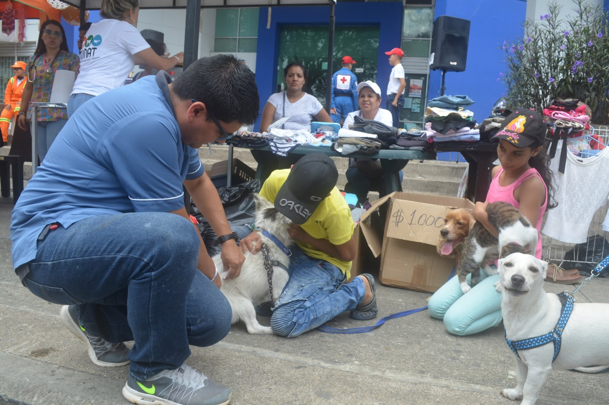
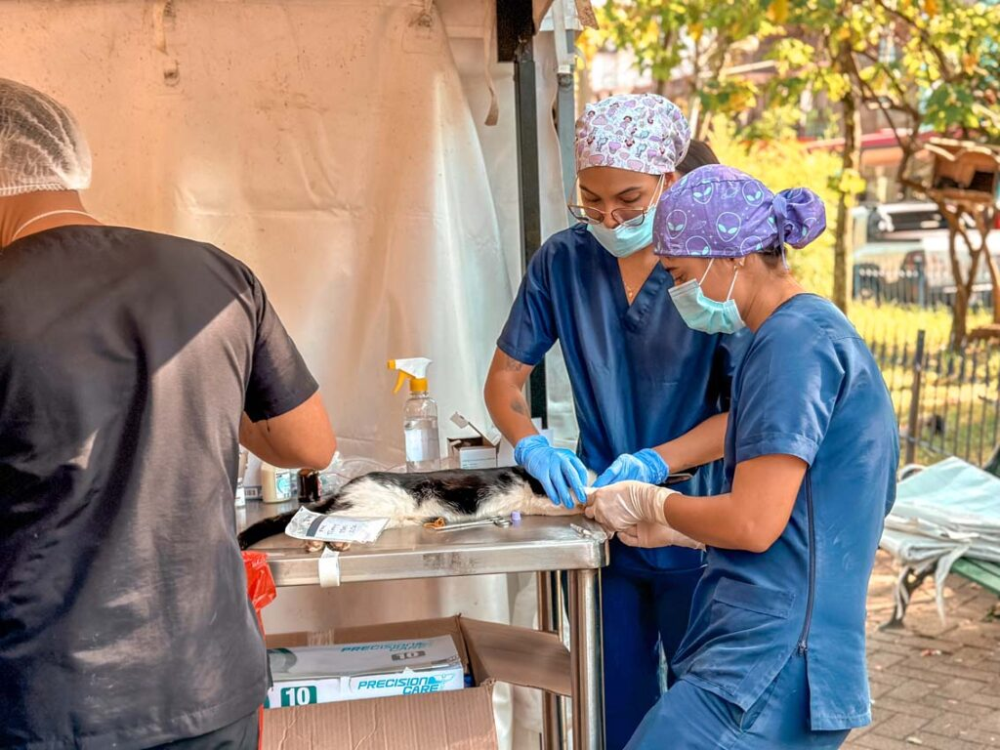
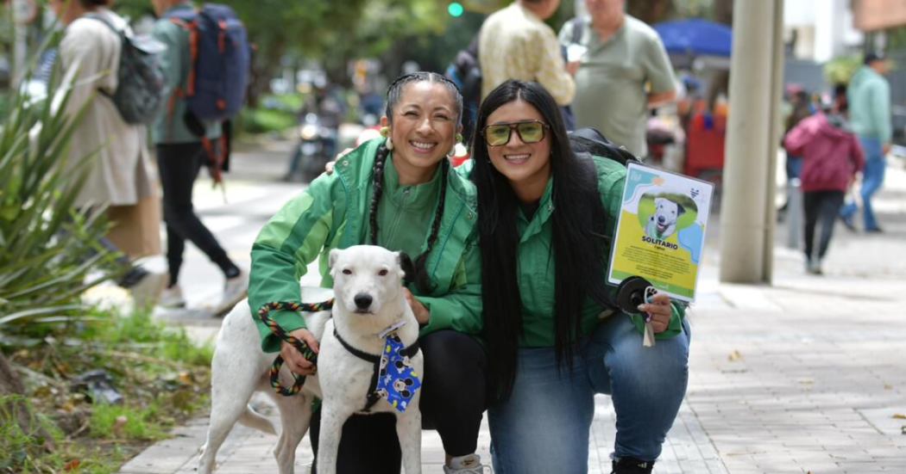
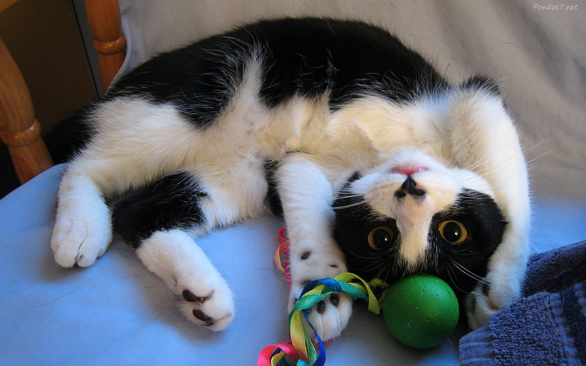
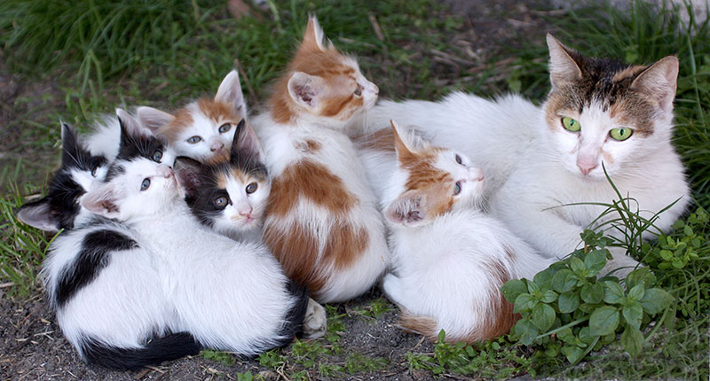
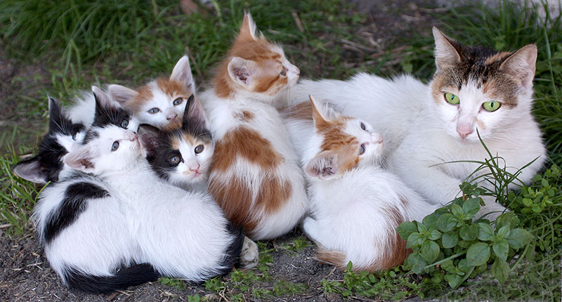
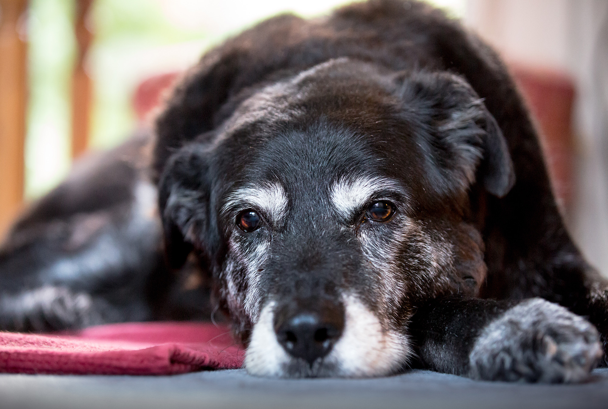
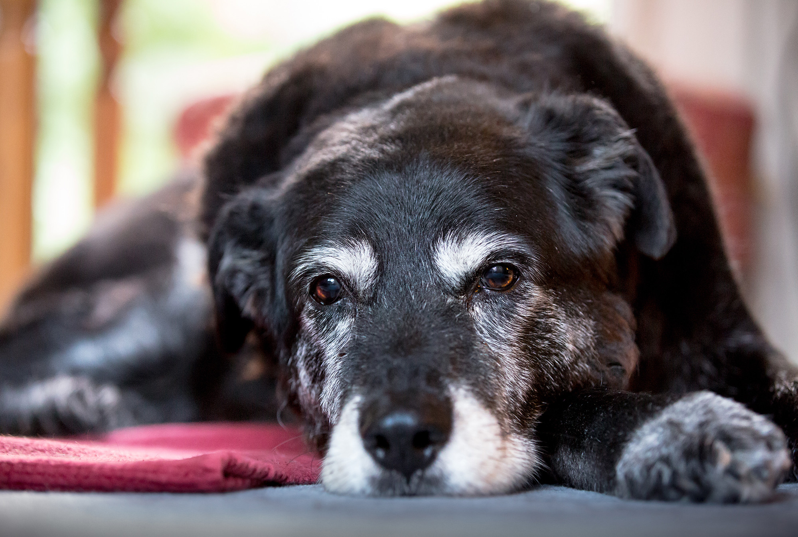

Galería de Medios y Eventos
Mira el impacto de nuestro trabajo, escucha las historias de esperanza y conoce dónde puedes encontrarnos.
Videos Destacados de Rescates
Rescate y Rehabilitación
Este video muestra el proceso completo de rescate y la increíble recuperación de nuestro amigo "Hércules".
Testimonio de Adopción
Tips para una adopción responsable
Galería de Eventos y Finales Felices
Momentos de nuestras jornadas de vacunación, esterilización, adopción y fotos de las mascotas en sus nuevos hogares.
  

 

 

Encuéntranos: Ubicación de Nuestro Centro de Operaciones
Visita nuestras instalaciones o participa en nuestros próximos eventos.